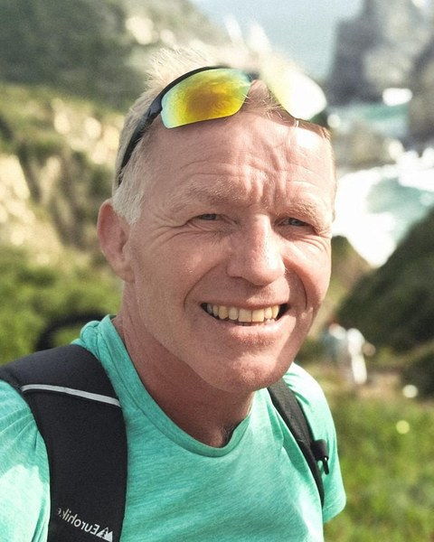
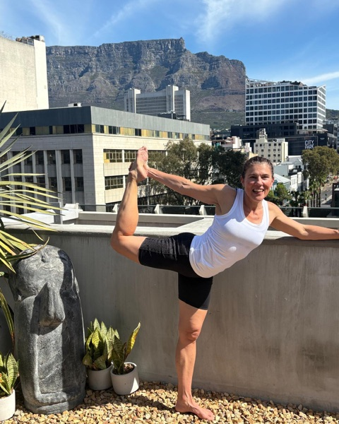

Yin and Somatics
Yin and SomaticsYvonne
Yoga has kept me fit, active and calm for 25 years, through a stressful career and raising four boys. However overworked I felt, I always left class feeling physically alive and relaxed at the same time.
Wanting to know more, I've completed four yoga and somatic teacher trainings in the last five years, and I'm still fascinated by how bones, muscles, fascia and nerves work together. In my Sunday morning class you'll have 75 minutes of yin yoga, somatic movement and yoga nidra. The invitation is to be curious, and to find the right balance of challenge and rest for your body.
Training: Four yoga and somatic teacher trainings
 The Set and Warm Flow
The Set and Warm FlowLauren
Don't let the calm yoga voice fool you: my classes are equal parts effort and ease. Yoga gives me the tools to stay sane(ish) when life gets chaotic, and I bring that grounding onto the mat. I've been moving, sweating and laughing with the Heat crew since day one.
We build poses step by step, so you can stop wherever feels right. Expect clear alignment cues, encouragement to hold on for one more breath, and plenty of support. Not on the mat? I'm probably drinking coffee.
Training: 500-hour trained with Awakening Yoga Academy, 200-hour with Our World Yoga, 50-hour Hot 26 & 2 with Breeze
 Flow, Power Hatha and TRX
Flow, Power Hatha and TRXCraig
I bring energy, encouragement and a love of movement to every class. My flow and power Hatha classes are challenging and rewarding, with room for you to explore at your own pace. I love a good hand balance, so expect a few playful challenges alongside mindful movement.
You'll get clear cues, a nudge to push just a little further, and a supportive room where you can laugh, sweat and leave feeling strong. Off the mat, I'm always looking for the next way to balance, move and challenge myself.
Training: 500-hour trained with Awakening Yoga Academy, 200-hour with Our World Yoga, 50-hour Hot 26 & 2 with Breeze, Level 2 Personal Trainer
 Power Yoga
Power YogaLaura
I fell in love with yoga nearly 20 years ago, when my doctor told me I needed to change my lifestyle. I tried lots of gym classes, but yoga was the only one I actually enjoyed, and I can't imagine life without it now.
I trained as a teacher in 2019, in Sri Lanka, Bali and Ibiza, so you can probably guess I love to travel. I live in Menstrie with my cockapoo Ava, and when I'm not on the mat or at my desk job, we're up the hills or off on adventures in Sheila the camper van.
Training: Trained in Sri Lanka, Bali and Ibiza since 2019
Fierce GraceZoe
My class is Thursday mornings at 6:30, and I absolutely love teaching it. I'm passionate about movement, both as medicine and as a way to work through everything life brings, together with whole food to nourish and support the body.
In my twenties I left a stressful job in finance and set off on a long journey back to health, which led me to rock climbing and retraining as an outdoor instructor. In 2016 I went to a pop-up hot yoga class with a group of friends, Helen included, and felt I'd landed right where I was supposed to be. What I love most about Heat is the feeling of community, and I'm inspired every time I walk through the doors.
Training: Fierce Grace teacher training, London, 2019
Somatic and trauma-informed yogaFrancesca
I'm a trauma-informed yoga facilitator and somatic therapist, and I specialise in functional yoga practices that support both mind and body. I'm passionate about women's health and wellbeing.
Alongside teaching yoga, I'm a qualified therapeutic life coach, with an online and in-person practice based in Bridge of Allan. At Heat I bring workshops you won't have tried before, like somatic yoga with props.
Training: Yin yoga and the Amy Carmody Yoga method, with ongoing training with somatic practitioner Lydia Zamorano

Hot 26 & 2, TRX and StrengthJack
I've been teaching fitness and yoga for over 20 years, and my journey started right where you are: sweating it out in the hot room with Hot 26 & 2. That passion took me to LA for my 500-hour hot yoga training, and I've been lucky enough to teach all over the world, from Australia and Hawaii to Vancouver and here in Scotland.
Yoga and fitness are lifelong practices I use every day, and I'd love to help you do the same. If you've ever thought “I'm not flexible enough for yoga”, my class is for you. I design my sessions to open up your body, build functional flexibility and help you move more freely, on and off the mat. Come and join me in the hot room.
Training: 500-hour hot yoga teacher training, Los Angeles

Hot YogaJules
I've been a full-time fitness professional and yoga teacher for 20 years. Fitness and yoga aren't just my career, they're a way of life, and I love nothing more than sharing that with others. My approach is holistic, because real health isn't about one single thing. It's a mix of yoga, fitness, nutrition and overall wellbeing.
My classes are all about finding your edge in a supportive, encouraging room. If you turn up, I want you to leave feeling it was worth your while, whether you came to build a stronger practice, have a good sweat or completely switch off.